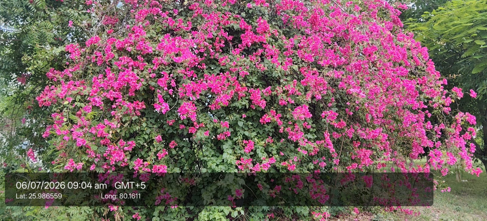

| Scientific name | Bougainvillea glabra / Bougainvillea spectabilis |
|---|---|
| Family | Nyctaginaceae |
| Category | Shrubs |
Habitat & Growing Conditions
- Native to South America, now widely cultivated in tropical and subtropical regions including India.
- Grows well in dry, sunny climates.
- Thrives in poor soils, drought‑resistant.
Ecological & Economic Importance
- Popular as an ornamental plant for walls, fences, and gardens.
- Bright bracts give colorful decoration year‑round.
- Hardy, drought‑resistant, requires little care.
- Used in landscaping and urban beautification.
- Provides shade and cover when grown on trellises.
- Attracts pollinators like bees and butterflies.
- Economically important in nursery and ornamental trade.
- Minor medicinal uses in folk medicine (respiratory issues).
- Helps in erosion control when planted densely.
- Symbolic for beauty and resilience in tropical gardens.
Field Notes
- Category: Ornamental climber/shrub